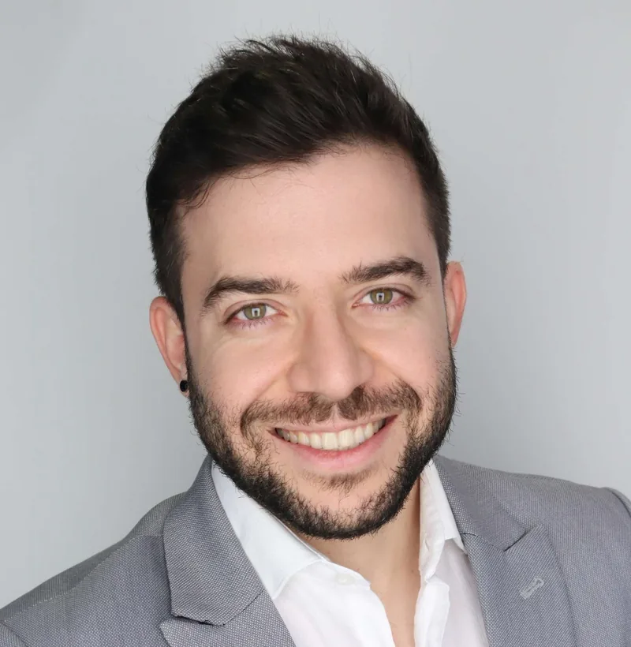
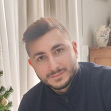
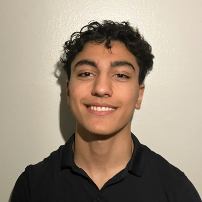
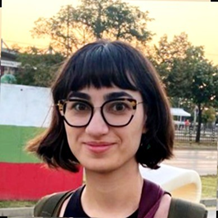

An interdisciplinary team bridging industrial engineering, computer science, and cyber-physical systems at the University of Central Florida.

Dr. Minas Pantelidakis is an Assistant Professor in the Department of Industrial Engineering and Management Systems (IEMS) at the College of Engineering and Computer Science (CECS) at the University of Central Florida (UCF), and Director of the Digital Transformation and Cyber-Physical Systems (DT&CPS) Laboratory. His work spans research, teaching, and collaboration across disciplines, with a focus on Digital Twins. His research interests center on Digital Twins, Advanced Manufacturing, Modeling & Simulation, the Internet of Things, and Artificial Intelligence.
Dr. Pantelidakis holds a Ph.D. (2025) and an M.S. (2024) in Industrial and Systems Engineering from Auburn University, as well as an M.Eng. in Electrical and Computer Engineering from the Technical University of Crete (2021). His academic accomplishments have been recognized with the JT Black Lean Engineering Student of the Year award (2023) and the Walt and Virginia Woltosz Fellowship (2021–2025).
During his doctoral studies, Dr. Pantelidakis was a researcher at the Interdisciplinary Center for Advanced Manufacturing Systems (ICAMS) at Auburn University, where he led research on the integration of Digital Twins into manufacturing, supported by funding from the Department of Defense (DoD), the National Institute of Standards and Technology (NIST), and various industry collaborators. Additionally, during his undergraduate studies, he led a precision irrigation initiative in partnership with the Center of Irrigation Technology (CIT) at California State University, Fresno, with funding from the California Department of Food & Agriculture (CDFA). His scholarly contributions include publications in prestigious journals such as the Journal of Manufacturing Systems, the International Journal of Advanced Manufacturing Technology, the International Journal of Lean Six Sigma, and Expert Systems with Applications.

Konstantinos Lazaridis is a Ph.D. student in the Department of Industrial Engineering and Management Systems at the University of Central Florida. He holds an M.Eng. in Electrical and Computer Engineering from the Technical University of Crete, Greece, where his thesis involved developing an advanced multi-functional CNC machine integrating additive and subtractive manufacturing processes. He brings extensive hands-on experience in CNC machining, 3D printing, embedded systems, and mechatronic prototyping. His research interests include digital manufacturing, process optimization, additive and subtractive manufacturing, and the Internet of Things.
Matthew Brooks is a Master's student in Systems Engineering at the University of Central Florida, where he also earned his B.S. in Mechanical Engineering (2021). His research focuses on Digital Twins for nuclear power generation, combining his interests in mechanical design and programming. Professionally, Matt works as a mechanical design engineer for nuclear power plants and brings prior industry experience in product design and injection molding.

Abraham Mathkour is an undergraduate student majoring in Industrial Engineering at the University of Central Florida. His research centers on applying Digital Twins within manufacturing environments to model real-time production, with a specific emphasis on 3D printers. Previously, his research investigated Digital Twins for rovers to enhance operational efficiency and formulation accuracy. This technical focus is driven by a broader passion for advancing system optimization across both the manufacturing and service industries.

Varvara Vythoulka was a Ph.D. student in the Department of Industrial Engineering and Management Systems at the University of Central Florida. She holds an Integrated Master's degree (B.Sc. & M.Eng.) in Computer Engineering and Informatics from the University of Patras, Greece, where her thesis focused on blockchain-based security for IoT data management. She has prior research experience at the Cybersecurity Research Group at Delft University of Technology (Netherlands) and has co-authored work on smart contracts for smart water distribution networks, and distributed manufacturing. Her research interests include cybersecurity, IoT security, blockchain technologies, and AI-driven systems.
We are currently recruiting a fully funded PhD student, and we are always looking for motivated students and researchers. If you are interested in digital transformation, cyber-physical systems, digital manufacturing, or related areas, please reach out. We would love to hear from you.